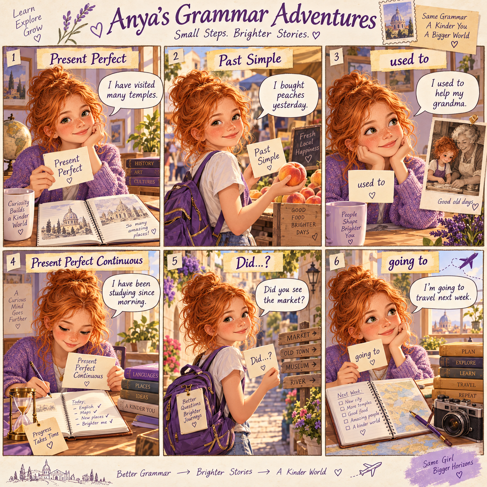
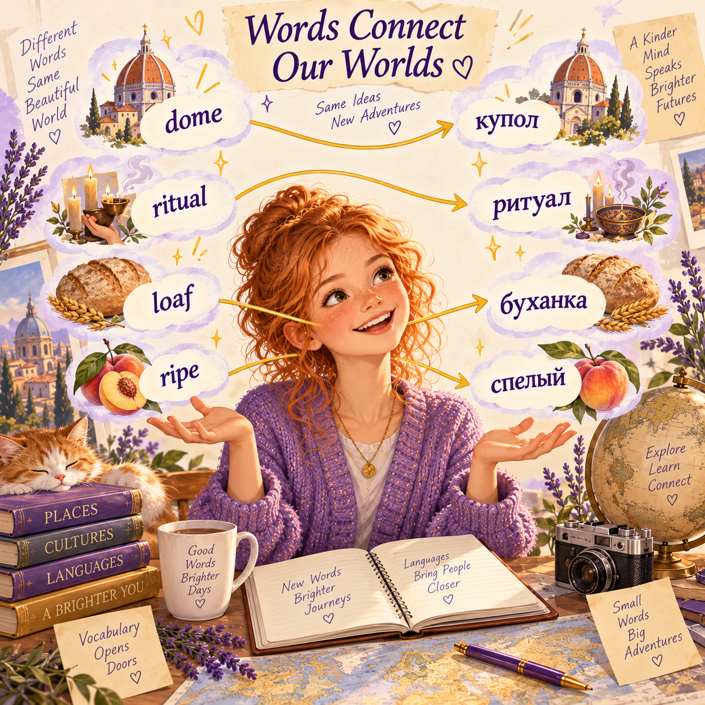
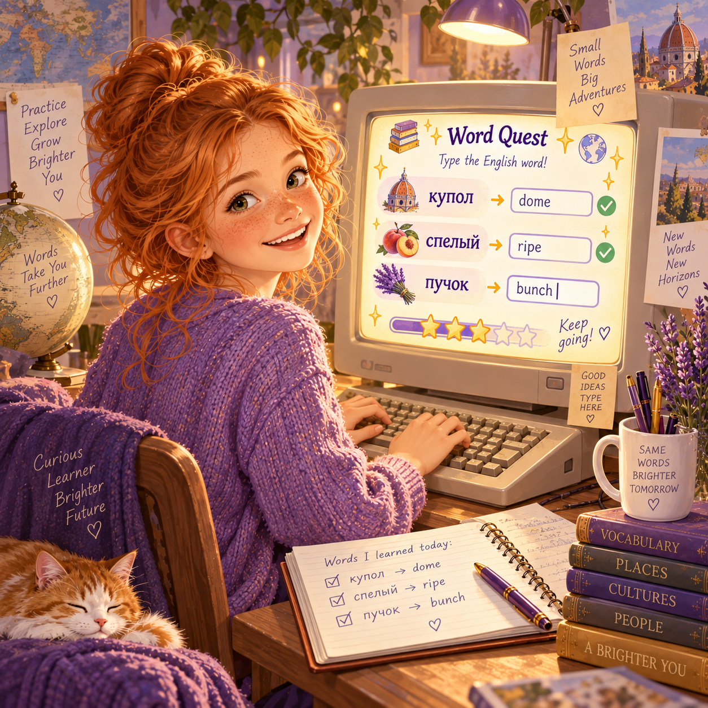
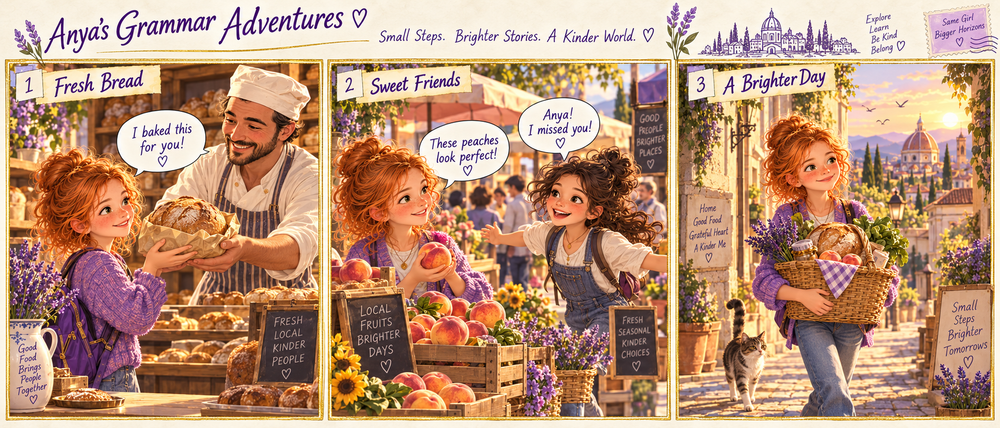
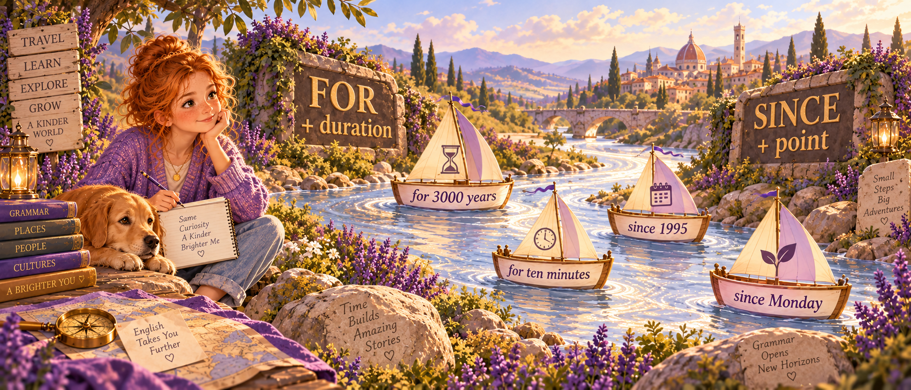

🎯 10 sections🎯 all grammar🎯 all vocab→ next: Land of Irregular Verbs
Anya's Recap Test · May + July + August on one page
A full test lesson before we step into the September story of irregular verbs. Not a box-tick session — a map: what is already solid, what still wobbles, what we take into the new block first.
Formatmatch · type · gap-fill · MCQ · tap · speaking · micro-story
Next lessonSept 14 · The Land of Irregular Verbs (story arc)
1
Warm-up · six quick questions
🔁 Recall · 6 MCQ
Warm-up. Six short questions — no writing, just tap. Right = green. Wrong = red + a note why.

1Which sentence is Present Perfect?
→ have/has + V3 = Present Perfect. Life experience up to now.
2«Yesterday Anya bought three peaches.» What tense?
→ «yesterday» = finished moment → Past Simple (bought = irregular V2 of buy).
3«When I was little, I ___ visit my grandmother every Saturday.» — a past habit that is NOT true now.
→ used to + base verb = past habit / state that is finished.
4«Pilgrims have been bathing in the Ganges for 3000 years.» What tense?
→ have been + V-ing = Present Perfect Continuous (duration, still going on).
5«___ you buy the salmon yesterday?» — Past Simple question.
→ Past Simple question = Did + subj + base form.
6«Look at those clouds! It's ___ rain.» — evidence in front of your eyes.
→ visible evidence / clear signs → going to. «will» = decision made now / promise.
2
Vocab test · 20 words from all modules
🎯 Match · Temples + Market + City
Click an English word on the left, then the matching definition on the right. Right pair = green. Wrong = shake, try again.

Word
dome
ritual
pilgrim
mosque
monastery
loaf
fishmonger
greengrocer
receipt
bunch
Definition
half-sphere roof, often on a church or a mosque
a religious action done the same way every time
a person travelling to a holy place
a Muslim place of prayer
a building where monks live and pray
the whole shape of baked bread
a shop or seller of fresh fish
a shop or seller of fruit and vegetables
a paper that proves you paid
a group of things tied together (herbs, keys, flowers)
Round 2 · adjectives + city
Word
ripe
sharp
mild
juicy
crunchy
sacred
crowded
a lane
a square
a stall
Definition
fruit that is ready to eat
strong, intense taste (like blue cheese)
gentle, not strong (a soft cheese)
full of natural liquid (a peach, a tomato)
makes a sound when you bite it (fresh bread)
holy, deeply respected in a religion
full of people, no space to move
a narrow street between buildings
an open flat space in the middle of a city
a small selling table at an outdoor market
3
Type the English word · 12 quick boxes
⌨️ Type · Russian → English
A short clue on the left — you type the exact word. No Enter needed; green appears the moment you type it right.

1half-sphere roof of a mosque
2religious action, always done the same way
3person on a religious journey
4holy, deeply respected
5the whole shape of baked bread
6paper that proves you paid
7fruit that is ready to eat
8full of natural liquid
9small selling table at a market
10a group of herbs tied together
11narrow street between buildings
12full of people, no space to move
4
Irregular verbs · type the Past Simple form
🌉 Bridge to next lesson
Twenty irregular verbs you will meet in the Land of Irregular Verbs. Type the Past Simple form (V2). A bridge into next week's story.
⚡ Reminder
Past Simple irregular = the second column of the verb table. buy → bought, go → went, see → saw. No -ed, no rule — just memory.
1go →
2buy →
3see →
4take →
5give →
6bring →
7catch →
8eat →
9drink →
10write →
11read →
12run →
13sleep →
14find →
15lose →
16meet →
17speak →
18stand →
19tell →
20think →
5
Present tenses · Anya's morning email
✍️ Gap-fill · 10 gaps
You are Anya. You are writing a short morning email to mum from India. Type the correct form (Present Simple / Continuous / Perfect / Perfect Continuous).
Quick map
Present Simple = fact / habit · Present Continuous = right now · Present Perfect = have/has + V3 experience or result · Present Perfect Continuous = have been + V-ing duration up to now.
Hi mum,
I (sit) on the stone steps of a ghat and the sun is just rising. Around me, pilgrims (light) tiny candles and putting them into the river.
The Ganges (flow) very quietly here. I (never / see) a river like this — huge, ancient, full of light.
I (sit) here for almost an hour and I still don't want to move. The old man next to me (say) that people (come) to this exact ghat for more than three thousand years.
I (already / visit) two temples this morning. Right now the sun (rise) over the water and everything (turn) gold.
Tell dad the postcards (come) soon. Love, A.
— Anya · Varanasi · 6:12 am
6
Past tenses · Saturday at the market
✍️ Gap-fill · 10 gaps
Anya is remembering a Saturday morning at the market. Type the correct form (Past Simple regular, Past Simple irregular, Past Continuous).
Quick map
Past Simple regular = V + -ed (walked, visited) · Past Simple irregular = V2 (bought, went, saw) · Past Continuous = was/were + V-ing (was choosing, were walking).

Last Saturday I (walk) to the market just after seven. The sky (turn) pink and the streets (still be) almost empty.
At the bakery, the old baker (give) me a warm loaf and (say): «I baked this one especially for you.» I (smile) and (take) it into my basket.
While I (choose) peaches at the greengrocer, my friend Nadia (run) up to me and (ask) for a spoon of change.
By nine o'clock, I (have) a full basket — bread, cheese, tomatoes, a bunch of parsley — and I (walk) home slowly, feeling lucky.
— from Anya's Sunday notebook
7
used to · past habit that is NOT true anymore
🕰 8 gaps
Formula: used to + base. Negative: didn't use to. Question: Did … use to …?
1 · When Anya was little, her grandmother (send) her to the market every Saturday.
2 · She (buy) a lollipop with the change and never tell mum.
3 · Grandma (bake) bread on Fridays.
4 · The old fishmonger (work) at that same stall for thirty years.
5 · Anya (not / like) tomatoes at all, but now she loves them.
6 · « (you / visit) this temple when you were young?» she asked the pilgrim.
7 · The city (be) much quieter — no cars, no motorbikes.
8 · «I (walk) here every morning,» the old lady said.
8
for or since? · ten quick taps
⏱ 10 taps
Rule: for + a length of time (3 years, ten minutes, ages) · since + a starting point (Monday, 2019, 6 am, I was a child).

1Anya has been in India ___ two weeks.
2The temple has stood here ___ the 6th century.
3Builders have been working on Sagrada Familia ___ 140 years.
4I haven't seen her ___ Monday.
5Pilgrims have been bathing in this river ___ more than 3000 years.
6She has been reading ___ 6 am.
7The bakery has been open ___ ages.
8He has worked at that stall ___ 1995.
9Anya has been waiting ___ ten minutes.
10I've loved this city ___ I was a child.
9
will or going to? · eight mini-decisions
🎯 8 taps
will = a decision made now / a promise / a prediction without evidence. going to = a plan made earlier / visible evidence.
1Look at those clouds! It ___ rain.
2— The phone is ringing. — Don't move, I ___ get it.
3Anya has bought her ticket. She ___ visit Kyoto next spring.
4I promise I ___ send you a postcard from every stop.
5He hasn't studied at all — he ___ fail the test.
6— It's hot in here. — OK, I ___ open the window.
7My sister is pregnant. She ___ have a baby in July.
8In a hundred years people ___ travel to Mars, I think.
10
Reading · a Saturday morning at the market
📖 Reading · 5 questions
Read the story carefully. Then answer 5 questions: three True / False / Not Stated, two multiple choice. All the answers are inside the text.
A Basket, a Coin, and a Bunch of Parsley
Anya walked out of the house at seven in the morning. The sky was turning from pink to gold, and the lanes of the old town were still half-empty. She carried a small wicker basket and a coin purse her grandmother had given her when she was five.
«I used to walk here every Saturday with grandma,» she thought. «I have been coming to this market since I was eight, but the smell of fresh bread still surprises me.»
At the bakery, the baker gave her a warm loaf and smiled. «I have already sold twelve loaves this morning,» he said, «but I have been saving this one for you.» Anya laughed and paid.
Next to the greengrocer's stall, her friend Nadia was choosing tomatoes. «Anya! I haven't seen you for weeks. Look at those clouds — it is going to rain any minute. Let's hurry.» They bought ripe peaches, a bunch of parsley and a small piece of sharp cheese, and walked home through the crowded square just as the first drops started to fall.
Q1«Anya has been coming to this market since she was eight.» — True / False / Not Stated?
→ The text says exactly this. True.
Q2«The baker had sold nothing before Anya arrived.» — True / False / Not Stated?
→ He had already sold twelve loaves. False.
Q3«Nadia lives in the next street.» — True / False / Not Stated?
→ Where Nadia lives is not mentioned at all. Not Stated.
Q4Who gave Anya the coin purse she still uses?
→ «a coin purse her grandmother had given her when she was five.»
Q5Why does Nadia use «is going to rain» and not «will rain»?
→ Visible clouds = evidence you can see now → «going to».
11
Listening · teacher reads a short news clip
🎧 Listening · 5 questions
Do not open the transcript. Listen to the teacher read the clip once (normal speed) and answer the five questions below. After you finish, open the transcript to check what you heard.
L1How long has the city been experiencing the heat?
→ «since Monday» — a starting point.
L2For how long have builders been working on the new bridge?
→ «for two weeks».
L3«The mayor has visited the site three times.» — True / False / Not Stated?
→ The clip says she has visited it twice, not three times. False.
L4Which form does the reporter use for the weather prediction based on the sky?
→ Visible clouds → «going to rain».
L5«The bridge will be open by December.» — True / False / Not Stated?
→ The opening date is not mentioned. Not Stated.
🎧 Open transcript · after the listening
Local News · Riverside Update
Good morning, this is Riverside Local News. The city has been experiencing an unusual heatwave since Monday, and temperatures have not dropped below thirty degrees for four days.
Builders have been working on the new pedestrian bridge over the river for two weeks. The mayor, who has visited the site twice this month, said the project is running on time and on budget.
Look up at the sky — it is going to rain later today. Please carry an umbrella, especially in the market area, where the streets are crowded on Saturdays.
That is all for this morning. Have a lovely weekend.
12
Speaking · pick one card + write a micro-story
🎤 open · speak + write
Pick one card. First tell it out loud in 8-10 sentences. Then write a micro-story (100-120 words) using at least 5 different structures from today's test.
ADescribe your favourite Saturday: from childhood to today. What used to be, what is now, what you have already done this year, what you are going to do tomorrow.
BDescribe a market / temple / street you visited recently. What you saw, what you bought / heard / tasted, what was happening around you (Past Continuous), how you have felt since.
CThe story «How I met Anya»: where, when, what she was doing (Past Continuous), what you did together (Past Simple), what you have been doing since.
🎯 Weave every one of these into your story (tick each box):
□ Present Perfect (have + V3) · □ Present Perfect Continuous (have been + V-ing) · □ Past Simple regular · □ Past Simple irregular · □ Past Continuous (was/were + V-ing) · □ used to · □ will or going to · □ for or since · □ at least 8 vocab words from the test
Micro-story · 100-120 words0 words
Recap done · one page, all modules
May → July → August fit onto a single page. What stayed inside — is real now. What still wobbles — is visible. Next Monday we step into the Land of Irregular Verbs — a story where every verb lives, breathes, and demands its V2 by the end of the chapter.